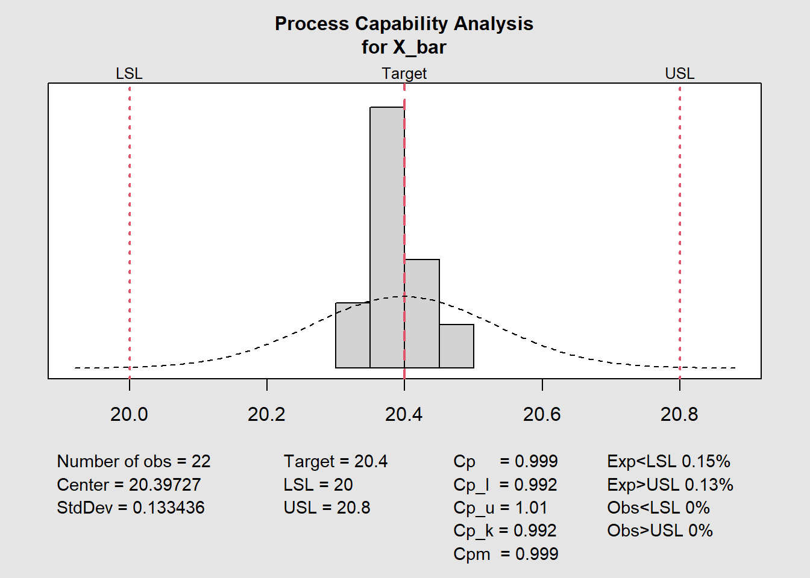
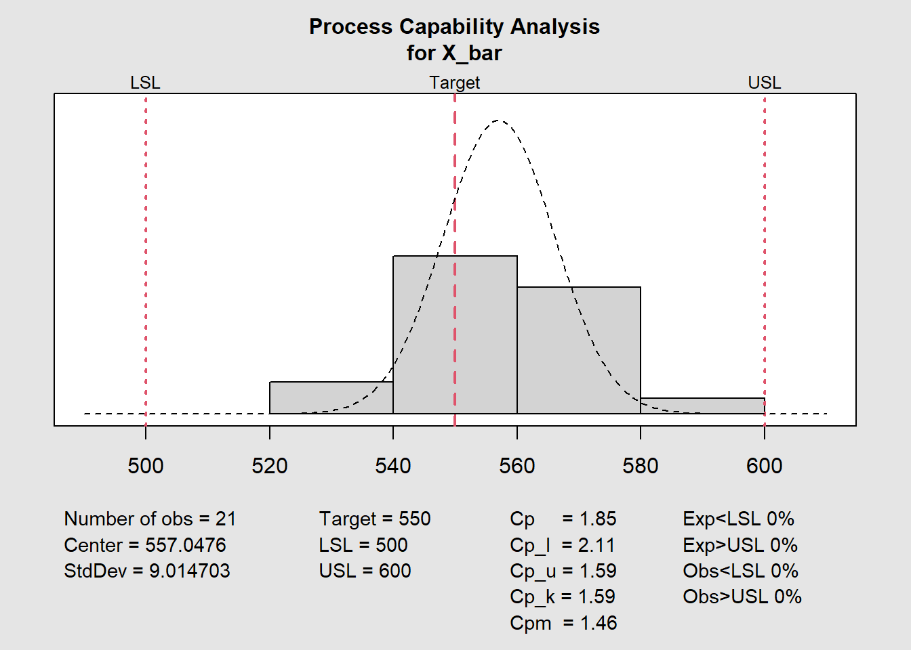
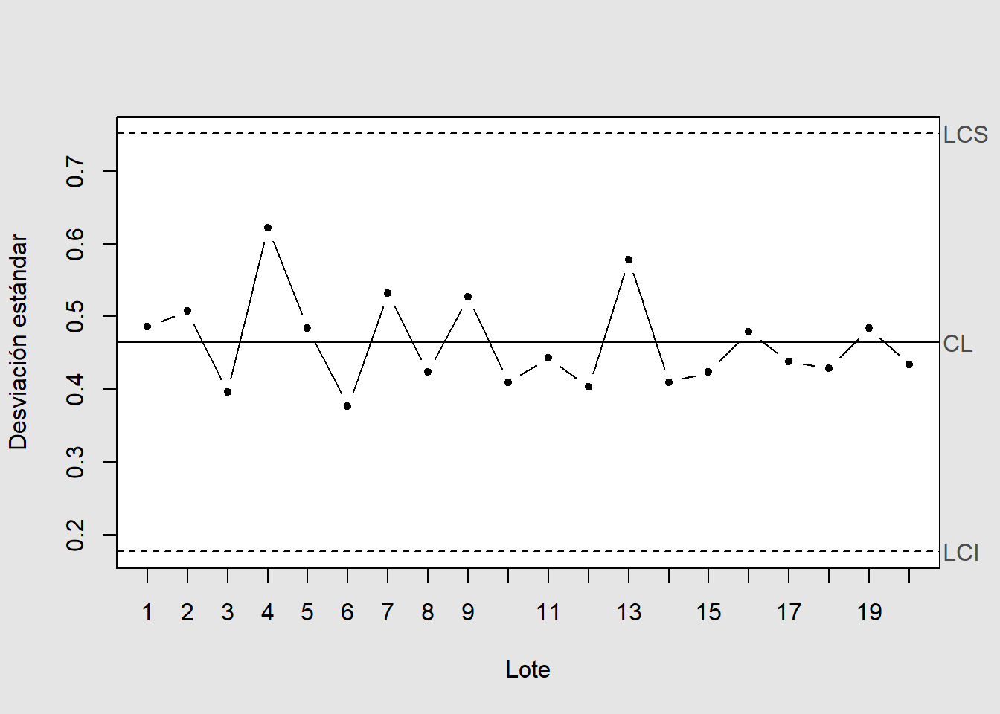
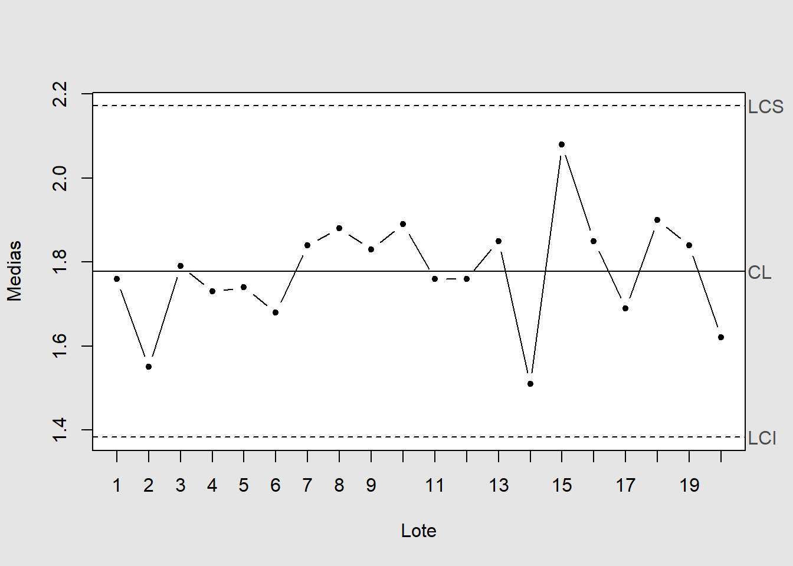
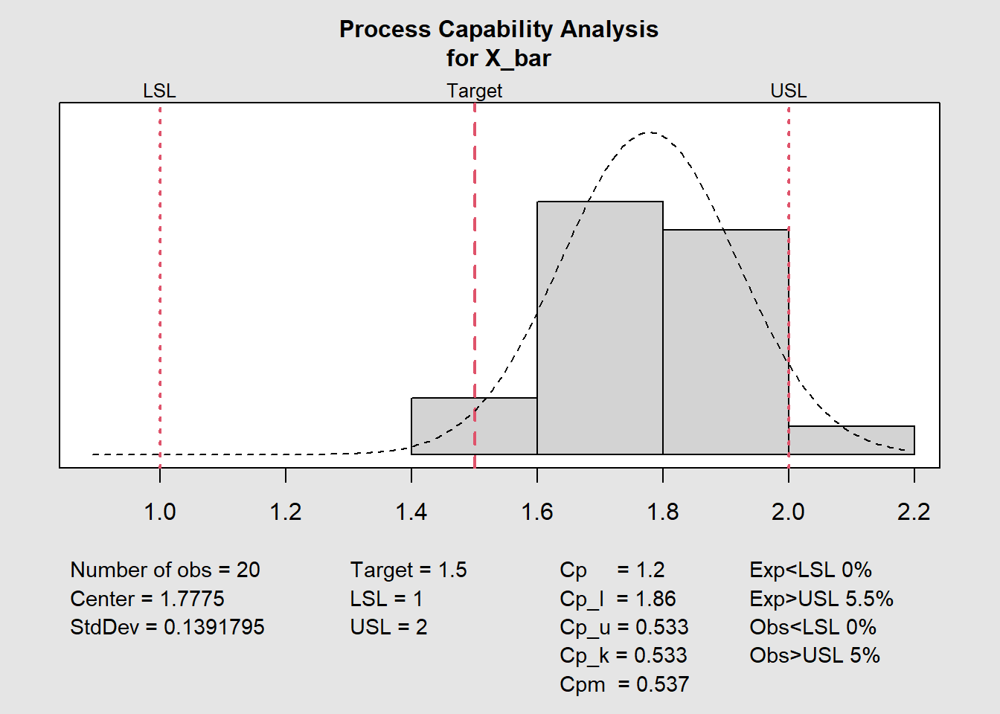

2Diagramas de Control para Variables y Análisis de Indices de Capacidad de Procesos Aplicados con \({\color{Blue} \textbf{\textsf{R}}}\)
3 Diagramas de control para variables
Los diagramas de control para variables son herramientas gráficas del Control Estadístico de Procesos (CEP) que se usan para monitorear y analizar un proceso a lo largo del tiempo. Su objetivo principal es distinguir entre las variaciones comunes (aleatorias e inherentes al proceso) y las variaciones especiales o asignables (causadas por eventos específicos e inesperados).
Estos diagramas se aplican a características de calidad que se pueden medir en una escala continua, como:
Peso de un producto.
Longitud o diámetro de una pieza.
Temperatura de un horno.
Tiempo de un ciclo de producción.
3.1 ¿Cómo funcionan?
📈 Un diagrama de control para variables grafica los datos de tu proceso en una secuencia de tiempo. Típicamente, consta de tres líneas horizontales:
Línea Central (LC): Representa el promedio histórico o el valor objetivo de la característica que se está midiendo. Es el rendimiento esperado del proceso.
Límite de Control Superior (LCS): Se ubica tres desviaciones estándar por encima de la línea central.
Límite de Control Inferior (LCI): Se ubica tres desviaciones estándar por debajo de la línea central.
La idea es que, si un proceso es estable y solo presenta variaciones comunes, casi todos los puntos graficados se encontrarán dentro de estos límites de control y distribuidos de manera aleatoria alrededor de la línea central.
Un punto fuera de los límites de control o un patrón no aleatorio (como una tendencia ascendente, 7 puntos seguidos de un mismo lado de la línea central, etc.) es una señal de que existe una causa especial de variación. Esto indica que algo inusual ha ocurrido y que el proceso está “fuera de control”, lo que requiere una investigación para identificar y corregir el problema.
3.2 Tipos más comunes
Generalmente, se usan en pares para monitorear tanto la tendencia central como la dispersión (variabilidad) del proceso:
Gráfica\(\bar{X}−R\)(Medias y Rangos): Es la más común. La gráfica \(\bar{X}\) (de medias) monitorea el promedio del proceso, mientras que la gráfica \(R\) (de rangos) monitorea la variabilidad dentro de las muestras. Se usa típicamente con tamaños de muestra pequeños (entre 2 y 10).
Gráfica\(\bar{X}−S\)(Medias y Desviación Estándar): Similar a la anterior, pero la gráfica \(S\) usa la desviación estándar en lugar del rango para medir la variabilidad. Es estadísticamente más robusta y se prefiere cuando los tamaños de muestra son más grandes (mayores a 10).
Gráfica\(I-MR\)(Individuales y Rango Móvil): Se utiliza cuando solo se tiene una medición por cada punto en el tiempo (tamaño de muestra = 1), como en procesos lentos o donde la medición es costosa o destructiva.
En el siguiente bloque de código se cargan todas las librerías o paquetes necesarios para el desarrollo de este capitulo, si no se tiene instalado alguno de ellos se instalaran automáticamente.
Del mismo modo, se crea una base de datos bib para los paquetes de R que se están utilizando en este capitulo, la cual se puede usar para crear una bibliografía al final del capitulo.
Por otro lado, aqui se crean funciones propias para darle formato a las salidas imprimidas en pantalla. las cuales se pueden usar en cualquier parte del capitulo.
3.3 Diagrama de control para la Media(\(\bar{X}\)) y el Rango(\(R\))
Los diagramas de control para la media (\(\bar{X}\)) y el rango (\(R\)) son herramientas fundamentales en el Control Estadístico de Procesos (CEP). Estos diagramas permiten monitorear la tendencia central y la variabilidad de un proceso a lo largo del tiempo, ayudando a identificar si el proceso está bajo control estadístico o si existen causas asignables que afectan su desempeño. Los mismos seran ejemplificados a continuación.
Ejemplo 3.1 (Aplicación del diagrama de control para la Media(\(\bar{X}\)) y el Rango(\(R\))) Se van a establecer gráficas de control para \(\bar{X}\) y \(R\) en determinada dimensión, en milímetros, de una parte. Se reunieron datos en tamaños de subgrupo igual a 6, y se citan a continuación en la Tabla 3.1. Determine la línea central y los límites de control tentativos. Suponga que hay causas asignables, y revise la línea central y los límites.Este ejemplo fue tomado de Besterfield, Gutiérrez, y Dı́az (1995).
Tabla 3.1: Mediciones del peso promedio y el rango en milímetros de una parte
Una vez observados los datos, Se procederá ahora a calcular los limites para ambos diagramas de control, para lo cual se usara el paquete SixSigma que contiene las constantes necesarias para calcular los limites de control, recordando que es un estudio inicial por lo que no se tienen ni los parámetros ni estimaciones de los mismos.
Primeramente, para la construcción del diagrama \(R\), se requiere determinar \(D_{3}\) y \(D_{4}\), lo cual se puede obtener de la respectiva tabla, teniendo en cuenta que \(n=6\), o mediante el siguiente bloque de código:
A continuación se muestran los calculos en siguiente bloque de código para el diagrama \(R\):
Código
n <-6# Sample size # Calculate D3 and D4 using SixSigma packageD_3 <-ifelse(1-3* (SixSigma::ss.cc.getd3(n) / SixSigma::ss.cc.getd2(n)) <0, 0, 1-3* (SixSigma::ss.cc.getd3(n) / SixSigma::ss.cc.getd2(n)))D_4 <-1+3* (SixSigma::ss.cc.getd3(n) / SixSigma::ss.cc.getd2(n))# Calculate the average of the ranges from your dfR_barra <-mean(datos$rango)# Calculate the control limitslci_R <- R_barra * D_3lc_R <- R_barralcs_R <- R_barra * D_4# Print the resultspaste0("LCI_R = ", formato(lci_R), " LC_R = ", formato(lc_R), " LCS_R = ", formato(lcs_R))
[1] "LCI_R = 0,0000 LC_R = 0,3556 LCS_R = 0,7126"
Manualmente, el calculo es el siguiente:
\[
\begin{align*}
LCI & = D_{3}\,\bar{R} = 0*0.3556 = 0,0000 \\
LC & = \bar{R} = 0.3556 \\
LCS & = D_{4}\,\bar{R} = 2,0038*0.3556 = 0,7126
\end{align*}
\] La estimación de la varianza viene dada por:
\[
\hat{\sigma}=\frac{\bar{R}}{d_{2}}= \frac{0.3556}{2,5344} = 0,1403
\] Para el diagrama \(\bar{x}\), los limites se obtienen mediante la siguiente formula:
Igualmente se calculan ahora los limites para el diagrama \(\bar{X}\), para lo cual se usara el paquete SixSigma que contiene las constantes necesarias para calcular los limites de control.
Código
n <-6# Calculate A_2 using SixSigma packageA_2 <-3/ (sqrt(n) * SixSigma::ss.cc.getd2(n))# Calculate the overall average of the sample means from your dfmedia_est <-mean(datos$media) # This corresponds to X_double_bar# Calculate the control limitslci_X <- media_est - A_2 * R_barralc_X <- media_estlcs_X <- media_est + A_2 * R_barra# Print the resultspaste0("LCI_X = ", formato(lci_X), " LC_X = ", formato(lc_X), " LCS_X = ", formato(lcs_X))
Una vez determinados los limites de control ya es posible realizar los diagramas de control respectivos con el paquete highcharter. Los cuales se pueden ver a continuación:
Código
# Diagrama de Control para el Rango (Gráfico R)highchart() |>hc_add_series(data = datos,hcaes(x = muestra, low = lc_R, high = lcs_R),step ="hv", marker =list(enabled =FALSE, visible =FALSE),type ="arearange", fillOpacity =0.2, name ="",color ="green",showInLegend =FALSE, tooltip =list(pointFormat ="{NULL}") ) |>hc_add_series(data = datos,hcaes(x = muestra, low = lci_R, high = lc_R),step ="hv", marker =list(enabled =FALSE, visible =FALSE),type ="arearange", fillOpacity =0.2, name ="",color ="blue",showInLegend =FALSE, tooltip =list(pointFormat ="{NULL}") ) |>hc_add_series(data = datos,type ="line", hcaes(x = muestra, y = lcs_R), useHTML =TRUE,color ="red", dashStyle ="Dash", name ="<b><i>LCS</b></i>",step ="hv", marker =list(enabled =FALSE),tooltip =list(valueDecimals =2) ) |>hc_add_series(data = datos,type ="line", hcaes(x = muestra, y = lc_R), useHTML =TRUE,color ="blue", name ="<b><i>LC</b></i>",step ="hv", marker =list(enabled =FALSE),tooltip =list(valueDecimals =2) ) |>hc_add_series(data = datos,type ="line", hcaes(x = muestra, y = lci_R), useHTML =TRUE,color ="red", dashStyle ="Dash", name ="<b><i>LCI</b></i>",step ="hv", marker =list(enabled =FALSE),tooltip =list(valueDecimals =2) ) |>hc_add_series(data = datos,type ="line", color ="black",hcaes(x = muestra, y = rango),marker =list(radius =3, fillColor ="blue", symbol ="circle" ),useHTML =TRUE,name ="<b><i>R<sub>i</sub></i></b>",dashStyle ="Dash",tooltip =list(valueDecimals =2) ) |>hc_xAxis(title =list(useHTML =TRUE,text ="<b><i>Muestra (n<sub>i</sub>)</i></b><br>" ) ) |>hc_yAxis(title =list(useHTML =TRUE,text ="<b><i>Rango (R<sub>i</sub>)</i></b><br>" ) ) |>hc_tooltip(crosshairs =TRUE, shared =TRUE) |>hc_plotOptions(series =list(animation =FALSE) )
Figura 3.1: Diagramas \(R\) para el diámetro interior (mm) de los anillos en la fase I con el paquete highcharter
Se puede observar en la Figura 3.1 el rango asociado al subgrupo 18 se encuentra fuera de los limites de control, por lo que suponiendo causas asignables el proceso esta fuera de control estadístico. Por lo que se tiene que recalcular los limites de control y construir nuevamente el diagrama \(R\).
Figura 3.2: Diagramas \(\bar{x}\) para el diámetro interior (mm) de los anillos en la fase I con el paquete highcharter
Se puede observar igualmente en la Figura 3.2 que aqui existen dos puntos consecutivos (4 y 5) fuera de los limites de control , por lo que suponiendo causas atribuibles el proceso se encuentra fuera de control estadistico. Por lo que se tiene que recalcular los limites de control y contruir nuevamente el diagrama \(\bar{X}\).
Los limites para el diagrama \(R\), serian ahora los siguientes:
Código
datos <- datos[-c(4,5,18)]# Calculate D3 and D4 using SixSigma packageD_3 <-ifelse(1-3* (SixSigma::ss.cc.getd3(n) / SixSigma::ss.cc.getd2(n)) <0, 0, 1-3* (SixSigma::ss.cc.getd3(n) / SixSigma::ss.cc.getd2(n)))D_4 <-1+3* (SixSigma::ss.cc.getd3(n) / SixSigma::ss.cc.getd2(n))# Calculate the average of the ranges from your dfR_barra <-mean(datos$rango)# Calculate the control limitslci_R <- R_barra * D_3lc_R <- R_barralcs_R <- R_barra * D_4# Print the resultspaste0("LCI_R = ", formato(lci_R), " LC_R = ", formato(lc_R), " LCS_R = ", formato(lcs_R))
[1] "LCI_R = 0,0000 LC_R = 0,3382 LCS_R = 0,6777"
Por otro lado, los limites para el diagrama \(\bar{X}\) son los siguientes:
Código
n <-6# Calculate A_2 using SixSigma packageA_2 <-3/ (sqrt(n) * SixSigma::ss.cc.getd2(n))# Calculate the overall average of the sample means from your dfmedia_est <-mean(datos$media) # This corresponds to X_double_bar# Calculate the control limitslci_X <- media_est - A_2 * R_barralc_X <- media_estlcs_X <- media_est + A_2 * R_barra# Print the resultspaste0("LCI_X = ", formato(lci_X), " LC_X = ", formato(lc_X), " LCS_X = ", formato(lcs_X))
Figura 3.4: Diagramas \(\bar{x}\) para el diámetro interior (mm) de los anillos en la fase I con el paquete highcharter
Igualmente, como se puede observar ninguno de los puntos se encuentra fuera de los limites de control. Por lo que, dado que para ambos diagramas de control (Figura 3.3 y Figura 3.4) no se encuentran ahora puntos fuera de control, se puede decir entonces que el proceso es estable o bajo control tanto en media como en varianza.
3.3.1 Capacidad del Proceso
Para determinar la capacidad del proceso estabilizado, se informa que la especificación superior (LSE) para la dimensión de la parte es de 20.80 mm y la especificación inferior (LIE) es de 20.00 mm. Con estos datos y las propiedades del proceso que has determinado (media del proceso revisada y desviación estándar estimada a partir del rango promedio revisado), calcula los índices de capacidad del proceso (\(C_p\) y \(C_{pk}\)) y evalúa qué tan bien está operando el proceso en relación con las especificaciones.
Para empezar, una vez determinado que el proceso se encuentra bajo control estadistico , se procede a calcular los indices de capacidad del proceso, por este motivo se supondrá que los datos siguen una distribución normal.
Los limites de tolerancia natural fueron los establecidos anteriormente, siendo estos \(20,2338\) y \(20,5607\).
Código
X_bar <- datos$media R <- datos$rango # Establecer los límites de especificaciónspec.limits <-c(20, 20.80)n <-6# Tamaño del subgrupo# Calcular la media del rango revisadaR_barra <-mean(R)# ESTO ES CRÍTICO: Estimar la desviación estándar del proceso (sigma) a partir de R_barra# Usamos d2(n) para convertir el rango promedio en una estimación de sigmasd_estimado_proceso <- R_barra / SixSigma::ss.cc.getd2(n)# Verifica si tus 'R' (datos$rango después de la eliminación) tienen variabilidad.#print(paste("R_revisado después de la eliminación:", paste(R, collapse = ", ")))#print(paste("Media de R_revisado:", R_barra))#print(paste("Desviación estándar estimada del proceso (sd_estimado_proceso):", sd_estimado_proceso))# Realizar el análisis de capacidad del proceso# Pasamos la desviación estándar estimada al objeto qcc# NOTA: qcc(data, type = "xbar", ...) espera 'data' sean los *datos crudos* para calcular medias y std.dev.# O si le pasas las medias de los subgrupos (como estás haciendo con X_bar),# DEBES proporcionar una estimación de la desviación estándar del proceso ('std.dev')# o el rango promedio ('R.bar') si quieres que la estime de ahí.xbar_chart_obj <-qcc(X_bar, type ="xbar", sizes = n, plot =FALSE,std.dev = sd_estimado_proceso)capability <-process.capability(xbar_chart_obj, spec.limits = spec.limits , print =FALSE)# Mostrar los índices de capacidad del proceso#print(capability)#summary(capability)#plot(capability) # Para ver la gráfica de capacidad corregida# Calcular la porción caída (esto debería ser consistente con 'capability$exp' ahora)# mean_data es la media del procesomean_data <-mean(X_bar) # Usar la media de las X_bar revisadaslower_limit <- spec.limits[1]upper_limit <- spec.limits[2]# Proporción de unidades por debajo del límite inferiorportion_below <-pnorm(lower_limit, mean = mean_data, sd = sd_estimado_proceso)# Proporción de unidades por encima del límite superiorportion_above <-1-pnorm(upper_limit, mean = mean_data, sd = sd_estimado_proceso)# Porción caída totalportion_fallen <- portion_below + portion_aboveportion_fallen <-sum(capability$exp)# Mostrar la porción caídacat("Porción caída:", formato(portion_fallen), "\n")
Porción caída: 0,0027

Figura 3.5: Capacidad del proceso
El análisis de capacidad del proceso para la dimensión de la parte revela que, aunque hay un margen, el desempeño no es completamente óptimo.
El índice de capacidad potencial del proceso (\(C_p\)) de 0.999 indica una capacidad potencial marginal. Esto sugiere que la variabilidad intrínseca del proceso es casi igual a la amplitud de las especificaciones. Según Montgomery, valores de \(C_p\) entre 0.67 y 1.0 son no adecuados para el trabajo, señalando que el proceso requiere un análisis profundo y modificaciones para alcanzar una calidad satisfactoria, a pesar de estar muy cerca de 1.0.
El índice de capacidad real del proceso (\(C_{pk}\)) de 0.992 es la preocupación principal. Al ser el menor de los \(C_{pL}\) y \(C_{pU}\) (siendo \(C_{pL}\) el que lo determina), revela que el proceso no está perfectamente centrado dentro de los límites de especificación, mostrando una ligera tendencia hacia el límite inferior. Este valor por debajo de 1.0 confirma que el proceso no es capaz de cumplir consistentemente con los requisitos, ya que existe una probabilidad real de producir piezas fuera de especificación.
El índice de capacidad de Taguchi (\(C_{pm}\)) de 0.999, siendo muy cercano al \(C_p\), sugiere que, aunque hay una variabilidad inherente que “casi” cabe en las especificaciones, la desviación respecto al valor objetivo (Target) es mínima. Esto refuerza la necesidad de mejorar la uniformidad y precisión, principalmente enfocándose en reducir la variabilidad para aumentar la holgura del proceso dentro de las especificaciones.
La porción caída esperada (suma de Exp<LSL 0.15% y Exp>USL 0.13%) es de 0.28%. Esto significa que aproximadamente el 0.28% de las partes producidas se espera que estén fuera de los límites de especificación. Aunque el porcentaje observado (Obs<LSL 0%, Obs>USL 0%) fue cero en las 22 muestras, la expectativa de casi un 0.3% de defectos subraya la importancia de implementar medidas correctivas para reducir esta proporción y mejorar la precisión general del proceso de manufactura.
3.4 Diagrama de control para la Media(\(\bar{X}\)) y la Desviación Estándar(\(S\))
Para el caso de la media y la desviación estándar, se utilizan los diagramas de control \(\bar{X}\) y \(S\), respectivamente. Estos diagramas son útiles para monitorear la estabilidad del proceso en términos de su media y variabilidad. A continuación, se muestra un ejemplo de cómo construir estos diagramas a traves de un ejemplo práctico.
Ejemplo 3.2 (Aplicación del diagrama de control para la Media(\(\bar{X}\)) y la Desviación Estándar(\(S\))) Se van a establecer gráficas de control para la dureza Brinell de acero endurecido para herramientas, en kilogramos por milímetro cuadrado. A continuación se muestran los datos para tamaños de subgrupo igual a 8. Determine la línea central y los límites de control tentativos para las gráficas \(\bar{x}\) y \(s\). Suponga que los puntos fuera de control tienen causas asignables, y calcule los límites y línea central revisados. Este ejemplo fue tomado de Besterfield, Gutiérrez, y Dı́az (1995).
Código
# Crear el dataframe en Rnumero_de_subgrupo <-1:25X_bar <-c(540, 534, 545, 561, 576, 523, 571, 547, 584, 552, 541, 545, 546, 551, 522, 579, 549, 508, 569, 574, 563, 561, 548, 556, 553)S <-c(26, 23, 24, 27, 25, 50, 29, 29, 23, 24, 28, 25, 26, 24, 29, 26, 28, 23, 22, 28, 33, 23, 25, 27, 23)df_dureza <-data.frame(NUMERO_DE_SUBGRUPO = numero_de_subgrupo, X_bar = X_bar, S = S)# Prepare the data for reactable, adapting from 'pistones' structuredureza <- df_dureza |> dplyr::mutate(# 'muestra' corresponds to 'numero_de_subgrupo'muestra = numero_de_subgrupo ) |> dplyr::rename(media = X_bar, desviacion = S ) |> dplyr::select( muestra, media, desviacion ) |> data.table::as.data.table()# Set reactable language optionsoptions(reactable.language =reactableLang(searchPlaceholder ="Buscar...",pageNext ="Siguiente",pagePrevious ="Anterior",noData ="No se encontraron entradas",pageInfo ="{rowStart} de {rowEnd} de {rows} filas" ))# Generate the reactable tablereactable::reactable( dureza,columns =list(muestra =colDef(header ="Muestra", align ="right"),media =colDef(header ="\\( \\bar{x}_{i} \\)", align ="right",format =colFormat(separators =TRUE, digits =3, locales ="es-ES"# Adjusted digits for your data ) ),desviacion =colDef(header ="\\( S_{i} \\)", align ="right", # Changed 'r' to correct S_i notationformat =colFormat(separators =TRUE, digits =2, locales ="es-ES"# Adjusted digits for your data ) ) ),striped =TRUE,bordered =TRUE,highlight =TRUE,filterable =TRUE,# You can add a defaultColDef if you want to apply common styles to all columnsdefaultColDef =colDef(align ="center"))
Tabla 3.2: Mediciones para la dureza Brinell de acero endurecido para herramientas, en kilogramos por milímetro cuadrado
Una vez observados los datos, Se procederá ahora a calcular los limites para ambos diagramas de control, para lo cual se usara igualmente el paquete SixSigma que contiene las constantes necesarias para calcular los limites de control, recordando que es un estudio inicial por lo que no se tienen ni los parámetros ni estimaciones de los mismos.
Se empezara calculando los limites del diagrama inicial \(S\). Los cuales vienen dados por: \[
\begin{align*}
LCS & = B_{4}\,\bar{S} \\
LC & = \bar{S}\\
LCI & = B_{3}\,\bar{S}
\end{align*}
\tag{3.3}\]
Por lo que son necesarios los valores de \(B_{3}\) y \(B_{4}\), pueden ubicarse en sus respectivas tablas, o ser calculados en R mediante el siguiente bloque de código:
Código
# Define the sample size (n) as specified in the Brinell problemn <-8# Calculate control chart constants B_3 and B_4 for the S-chart# These constants depend on the sample size 'n' and SixSigma::ss.cc.getc4(n)B_3 <-ifelse(1-3*sqrt(1- SixSigma::ss.cc.getc4(n)^2) / SixSigma::ss.cc.getc4(n) <0, 0,1-3*sqrt(1- SixSigma::ss.cc.getc4(n)^2) / SixSigma::ss.cc.getc4(n))B_4 <-1+3*sqrt(1- SixSigma::ss.cc.getc4(n)^2) / SixSigma::ss.cc.getc4(n)paste("B_3=",B_3," B_4=",formato(B_4))
[1] "B_3= 0.185089597759645 B_4= 1,8149"
Los limites se calculan de la siguiente forma:
Código
# Calculate the overall average of the subgroup standard deviations (S-bar)S_barra <-mean(dureza$desviacion)# Calculate the control limits for the S-chartlci_S <- B_3 * S_barra # Lower Control Limit for S-chartlc_S <- S_barra # Center Line for S-chartlcs_S <- B_4 * S_barra # Upper Control Limit for S-chart# Print the calculated control limitspaste0("LCI_S = ", formato(lci_S), " LC_S = ", formato(lc_S), " LCS_S = ", formato(lcs_S))
Los limites para el diagrama de control \(\bar{x}\) se calculan de la siguiente forma: \[
\begin{align*}
LCI & = \bar{\bar{x}} - A_{3}\,\bar{S} \\
LC & = \bar{\bar{x}} \\
LCS & = \bar{\bar{x}} + A_{3}\,\bar{S}
\end{align*}
\tag{3.4}\]
Mediante el siguiente bloque de código se obtienen los limites:
Manualmente, se obtienen mediante el siguiente calculo:
\[
\begin{align*}
LCI & = \bar{\bar{x}} - A_{3}\,\bar{S} = 551,9200-1,0991*26,8000= 522,4643\\
LC & = \bar{\bar{x}} = 551,9200 \\
LCS & = \bar{\bar{x}} + A_{3}\,\bar{S} = 551,9200+1,0991*26,8000= 581,3757
\end{align*}
\] Una vez ya calculados los limites. A continuación se muestran cada uno de estos diagramas:
Código
highchart() |>hc_add_series(data = dureza,hcaes(x = muestra, low = lc_S, high = lcs_S),step ="hv", marker =list(enabled =FALSE, visible =FALSE),type ="arearange", fillOpacity =0.2, name ="",color ="green",showInLegend =FALSE, tooltip =list(pointFormat ="{NULL}") ) |>hc_add_series(data = dureza, hcaes(x = muestra, low = lci_S, high = lc_S),step ="hv", marker =list(enabled =FALSE, visible =FALSE),type ="arearange", fillOpacity =0.2,name ="", color ="blue",showInLegend =FALSE, tooltip =list(pointFormat ="{NULL}") ) |>hc_add_series(data = dureza,type ="line", hcaes(x = muestra, y = lcs_S), useHTML =TRUE,color ="red", dashStyle ="Dash", name ="<b><i>LCS</b></i>",step ="hv", marker =list(enabled =FALSE),tooltip =list(valueDecimals =2) ) |>hc_add_series(data = dureza, type ="line", hcaes(x = muestra, y = lc_S), useHTML =TRUE,color ="blue", name ="<b><i>LC</b></i>",step ="hv", marker =list(enabled =FALSE),tooltip =list(valueDecimals =2) ) |>hc_add_series(data = dureza, type ="line", hcaes(x = muestra, y = lci_S), useHTML =TRUE,color ="red", dashStyle ="Dash", name ="<b><i>LCI</b></i>",step ="hv", marker =list(enabled =FALSE),tooltip =list(valueDecimals =2) ) |>hc_add_series(data = dureza, # Puntos de datos realestype ="line", color ="black",hcaes(x = muestra, y = desviacion),marker =list(radius =3, fillColor ="blue"), # Añadido fillColor para consistenciauseHTML =TRUE, name ="<b><i>S<sub>i</sub></i></b>",dashStyle ="Dash",tooltip =list(valueDecimals =2) ) |>hc_xAxis(title =list(useHTML =TRUE,text ="<b><i>Muestra (n<sub>i</sub>)</i></b><br>" ) ) |>hc_yAxis(title =list(useHTML =TRUE,text ="<b><i>Desviación estándar (S<sub>i</sub>)</i></b><br>") ) |>hc_tooltip(crosshairs =TRUE, shared =TRUE) |>hc_plotOptions(series =list(animation =FALSE) )
Figura 3.6: Diagrama \(S\) para la dureza Brinell del acero (kg/mm²) en la fase I con el paquete highcharter
Como se puede observar en la Figura 3.6 se observa que el punto 6 esta fuera de los limites de control, se concluye que el proceso no esta bajo control estadistico en varianza. Por lo que suponiendo causas asignables se eliminara del diagrama para recalcular los limites y observar nuevamente el comportamiento del proceso.
Código
highchart() |>hc_add_series(data = dureza, # Usar datos auxiliares para los límiteshcaes(x = muestra, low = lc_X, high = lcs_X),step ="hv", marker =list(enabled =FALSE, visible =FALSE),type ="arearange", fillOpacity =0.2, name ="",color ="green",showInLegend =FALSE, tooltip =list(pointFormat ="{NULL}") ) |>hc_add_series(data = dureza, # Usar datos auxiliares para los límiteshcaes(x = muestra, low = lci_X, high = lc_X),step ="hv", marker =list(enabled =FALSE, visible =FALSE),type ="arearange", fillOpacity =0.2, name ="",color ="blue",showInLegend =FALSE, tooltip =list(pointFormat ="{NULL}") ) |>hc_add_series(data = dureza, # Usar datos auxiliares para los límitestype ="line", hcaes(x = muestra, y = lcs_X), useHTML =TRUE,color ="red", dashStyle ="Dash", name ="<b><i>LCS</b></i>",step ="hv", marker =list(enabled =FALSE),tooltip =list(valueDecimals =2) ) |>hc_add_series(data = dureza, # Usar datos auxiliares para los límitestype ="line", hcaes(x = muestra, y = lc_X), useHTML =TRUE,color ="blue", name ="<b><i>LC</b></i>",step ="hv", marker =list(enabled =FALSE),tooltip =list(valueDecimals =2) ) |>hc_add_series(data = dureza, # Usar datos auxiliares para los límitestype ="line", hcaes(x = muestra, y = lci_X), useHTML =TRUE,color ="red", dashStyle ="Dash", name ="<b><i>LCI</b></i>",step ="hv", marker =list(enabled =FALSE),tooltip =list(valueDecimals =2) ) |>hc_add_series(data = dureza, # Puntos de datos realestype ="line", color ="black", hcaes(x = muestra, y = media),marker =list(radius =3, fillColor ="blue"),useHTML =TRUE,name ="<b><i>Media</i></b>", dashStyle ="Dash",tooltip =list(valueDecimals =2) ) |>hc_xAxis(title =list(useHTML =TRUE,text ="<b><i>Muestra (n<sub>i</sub>)</i></b><br>" ) ) |>hc_yAxis(title =list(useHTML =TRUE,text ="<b><i>Media</i></b><br>" ) ) |>hc_tooltip(crosshairs =TRUE, shared =TRUE) |>hc_plotOptions(series =list(animation =FALSE) )
Figura 3.7: Diagrama \(\bar{x}\) para la dureza Brinell del acero (kg/mm²) en la fase I con el paquete highcharter
Se puede observar en la Figura 3.7 que se tienen dos puntos fuera de los limites de control, siendo los puntos 8 y 18. Ahora bien, el punto 15 se encuentra muy cercano teniendo una diferencia con este de 0,46, lo cual es menor a unidad. Basado en uno de los criterios de General Electric, el cual establece que un punto que se encuentre muy cercano a uno de los limites debera considerarse como una advertencia de que el proceso no esta funcionando como deberia. Por lo que el proceso no se encuentra bajo control estadistico en su media, suponiendo causas asignables se procedera a eliminar los tres puntos de proceso, recalcular los limites y graficar nuevamente el diagrama.
Los nuevos limites para el diagrama \(S\), se calculan en el siguiente bloque de código:
Código
dureza <- dureza[-c(6,8,15,18)]# Calculate control chart constants B_3 and B_4 for the S-chart# These constants depend on the sample size 'n' and SixSigma::ss.cc.getc4(n)B_3 <-ifelse(1-3*sqrt(1- SixSigma::ss.cc.getc4(n)^2) / SixSigma::ss.cc.getc4(n) <0, 0,1-3*sqrt(1- SixSigma::ss.cc.getc4(n)^2) / SixSigma::ss.cc.getc4(n))B_4 <-1+3*sqrt(1- SixSigma::ss.cc.getc4(n)^2) / SixSigma::ss.cc.getc4(n)# Calculate the overall average of the subgroup standard deviations (S-bar)S_barra <-mean(dureza$desviacion)# Calculate the control limits for the S-chartlci_S <- B_3 * S_barra # Lower Control Limit for S-chartlc_S <- S_barra # Center Line for S-chartlcs_S <- B_4 * S_barra # Upper Control Limit for S-chart# Define the 'formato' function as it was used in your original snippet# (Assuming it formats numbers with commas as decimal separators and two digits)formato <-function(x, digits =4) {formatC(x, format ="f", digits = digits, big.mark =".", decimal.mark =",")}# Print the calculated control limitspaste0("LCI_S = ", formato(lci_S), " LC_S = ", formato(lc_S), " LCS_S = ", formato(lcs_S))
A continuación se muestran los diagramas de control:
Código
highchart() |>hc_add_series(data = dureza,hcaes(x = muestra, low = lc_S, high = lcs_S),step ="hv", marker =list(enabled =FALSE, visible =FALSE),type ="arearange", fillOpacity =0.2, name ="",color ="green",showInLegend =FALSE, tooltip =list(pointFormat ="{NULL}") ) |>hc_add_series(data = dureza, hcaes(x = muestra, low = lci_S, high = lc_S),step ="hv", marker =list(enabled =FALSE, visible =FALSE),type ="arearange", fillOpacity =0.2,name ="", color ="blue",showInLegend =FALSE, tooltip =list(pointFormat ="{NULL}") ) |>hc_add_series(data = dureza,type ="line", hcaes(x = muestra, y = lcs_S), useHTML =TRUE,color ="red", dashStyle ="Dash", name ="<b><i>LCS</b></i>",step ="hv", marker =list(enabled =FALSE),tooltip =list(valueDecimals =2) ) |>hc_add_series(data = dureza, type ="line", hcaes(x = muestra, y = lc_S), useHTML =TRUE,color ="blue", name ="<b><i>LC</b></i>",step ="hv", marker =list(enabled =FALSE),tooltip =list(valueDecimals =2) ) |>hc_add_series(data = dureza, type ="line", hcaes(x = muestra, y = lci_S), useHTML =TRUE,color ="red", dashStyle ="Dash", name ="<b><i>LCI</b></i>",step ="hv", marker =list(enabled =FALSE),tooltip =list(valueDecimals =2) ) |>hc_add_series(data = dureza, # Puntos de datos realestype ="line", color ="black",hcaes(x = muestra, y = desviacion),marker =list(radius =3, fillColor ="blue"), # Añadido fillColor para consistenciauseHTML =TRUE, name ="<b><i>S<sub>i</sub></i></b>",dashStyle ="Dash",tooltip =list(valueDecimals =2) ) |>hc_xAxis(title =list(useHTML =TRUE,text ="<b><i>Muestra (n<sub>i</sub>)</i></b><br>" ) ) |>hc_yAxis(title =list(useHTML =TRUE,text ="<b><i>Desviación estándar (S<sub>i</sub>)</i></b><br>") ) |>hc_tooltip(crosshairs =TRUE, shared =TRUE) |>hc_plotOptions(series =list(animation =FALSE) )
Figura 3.8: Diagrama \(S\) para la dureza Brinell del acero (kg/mm²) en la fase I con el paquete highcharter
Como se puede observar en la Figura 3.8 ninguno de los puntos se encuentra fuera de los limites de control.
Código
highchart() |>hc_add_series(data = dureza, # Usar datos auxiliares para los límiteshcaes(x = muestra, low = lc_X, high = lcs_X),step ="hv", marker =list(enabled =FALSE, visible =FALSE),type ="arearange", fillOpacity =0.2, name ="",color ="green",showInLegend =FALSE, tooltip =list(pointFormat ="{NULL}") ) |>hc_add_series(data = dureza, # Usar datos auxiliares para los límiteshcaes(x = muestra, low = lci_X, high = lc_X),step ="hv", marker =list(enabled =FALSE, visible =FALSE),type ="arearange", fillOpacity =0.2, name ="",color ="blue",showInLegend =FALSE, tooltip =list(pointFormat ="{NULL}") ) |>hc_add_series(data = dureza, # Usar datos auxiliares para los límitestype ="line", hcaes(x = muestra, y = lcs_X), useHTML =TRUE,color ="red", dashStyle ="Dash", name ="<b><i>LCS</b></i>",step ="hv", marker =list(enabled =FALSE),tooltip =list(valueDecimals =2) ) |>hc_add_series(data = dureza, # Usar datos auxiliares para los límitestype ="line", hcaes(x = muestra, y = lc_X), useHTML =TRUE,color ="blue", name ="<b><i>LC</b></i>",step ="hv", marker =list(enabled =FALSE),tooltip =list(valueDecimals =2) ) |>hc_add_series(data = dureza, # Usar datos auxiliares para los límitestype ="line", hcaes(x = muestra, y = lci_X), useHTML =TRUE,color ="red", dashStyle ="Dash", name ="<b><i>LCI</b></i>",step ="hv", marker =list(enabled =FALSE),tooltip =list(valueDecimals =2) ) |>hc_add_series(data = dureza, # Puntos de datos realestype ="line", color ="black", hcaes(x = muestra, y = media),marker =list(radius =3, fillColor ="blue"),useHTML =TRUE,name ="<b><i>Media</i></b>", dashStyle ="Dash",tooltip =list(valueDecimals =2) ) |>hc_xAxis(title =list(useHTML =TRUE,text ="<b><i>Muestra (n<sub>i</sub>)</i></b><br>" ) ) |>hc_yAxis(title =list(useHTML =TRUE,text ="<b><i>Media</i></b><br>" ) ) |>hc_tooltip(crosshairs =TRUE, shared =TRUE) |>hc_plotOptions(series =list(animation =FALSE) )
Figura 3.9: Diagrama \(\bar{x}\) para la dureza Brinell del acero (kg/mm²) en la fase I con el paquete highcharter
Igualmente, como se puede observar ninguno de los puntos se encuentra fuera de los limites de control. Por lo que, dado que para ambos diagramas de control (Figura 3.8 y Figura 3.9) no se encuentran ahora puntos fuera de control, se puede decir entonces que la dureza Brinell de acero endurecido para herramientas, en kilogramos por milímetro cuadrado es estable tanto en media como en varianza.
3.4.1 Capacidad del Proceso
Para determinar la capacidad del proceso estabilizado, se informa que la especificación superior (LSE) para la dureza Brinell es de 600 kg/mm² y la especificación inferior (LIE) es de 500 kg/mm². Con estos datos y las propiedades del proceso que has determinado (media del proceso revisada y desviación estándar estimada a partir del rango promedio revisado), calcula los índices de capacidad del proceso (\(C_p\) y \(C_{pk}\)) y evalúa qué tan bien está operando el proceso en relación con las especificaciones.
Para empezar, una vez determinado que el proceso se encuentra bajo control estadistico , se procede a calcular los indices de capacidad del proceso, por este motivo se supondrá que los datos siguen una distribución normal.
Los limites de tolerancia natural fueron los establecidos anteriormente, siendo estos \(528,8375\) y \(585,2577\).
Código
X_bar <- dureza$mediaS <- dureza$desviacion# Establecer los límites de especificaciónspec.limits <-c(500, 600)# Calcular la media del rango revisadaS_barra <-mean(S)# ESTO ES CRÍTICO: Estimar la desviación estándar del proceso (sigma) a partir de R_barra# Usamos d2(n) para convertir el rango promedio en una estimación de sigmasd_estimado_proceso <- S_barra / SixSigma::ss.cc.getd2(n)xbar_chart_obj <-qcc(X_bar, type ="xbar", sizes = n, plot =FALSE,std.dev = sd_estimado_proceso)capability <-process.capability(xbar_chart_obj, spec.limits = spec.limits , print =FALSE)# Calcular la porción caída (esto debería ser consistente con 'capability$exp' ahora)# mean_data es la media del procesomean_data <-mean(X_bar) # Usar la media de las X_bar revisadaslower_limit <- spec.limits[1]upper_limit <- spec.limits[2]# Proporción de unidades por debajo del límite inferiorportion_below <-pnorm(lower_limit, mean = mean_data, sd = sd_estimado_proceso)# Proporción de unidades por encima del límite superiorportion_above <-1-pnorm(upper_limit, mean = mean_data, sd = sd_estimado_proceso)# Porción caída totalportion_fallen <- portion_below + portion_aboveportion_fallen <-sum(capability$exp)# Mostrar la porción caídacat("Porción caída:", formato(portion_fallen), "\n")
Porción caída: 0,0000

Figura 3.10: Capacidad del proceso
El análisis de capacidad del proceso para la dureza Brinell de acero endurecido para herramientas revela que el desempeño es altamente capaz y robusto.
El índice de capacidad potencial del proceso (\(C_p\)) de 1.85 indica una excelente capacidad potencial. Esto sugiere que la variabilidad intrínseca del proceso es significativamente menor que la amplitud de las especificaciones. Un \(C_p\) mayor a 1.33 es generalmente considerado altamente adecuado para el trabajo, lo que significa que el proceso puede cumplir consistentemente con los límites de dureza Brinell establecidos.
El índice de capacidad real del proceso (\(C_{pk}\)) de 1.59 confirma la gran capacidad del proceso. Este valor, determinado por el \(C_{pU}\) (1.59 vs \(C_{pL}\) 2.11), revela que el proceso está bien centrado dentro de los límites de especificación, aunque con una ligera tendencia hacia el límite superior. Un \(C_{pk}\) superior a 1.33 es una señal de un proceso altamente capaz y robusto, con un riesgo muy bajo de producir mediciones de dureza fuera de las especificaciones.
El índice de capacidad de Taguchi (\(C_{pm}\)) de 1.46 corrobora la solidez del proceso al considerar no solo la variabilidad y la centración, sino también la desviación respecto al valor objetivo (Target = 550 kg/mm²). Este valor alto sugiere que la salida del proceso (media observada de 557.0476 kg/mm²) está razonablemente cerca del objetivo, y la variabilidad es baja, lo que garantiza una alta calidad y consistencia.
La porción caída esperada (Exp<LSL 0% y Exp>USL 0%) es de 0% en ambos lados de las especificaciones. Esto significa que se espera que ninguna de las mediciones de dureza Brinell esté fuera de los límites de especificación. La porción observada fue también del 0% (Obs<LSL 0%, Obs>USL 0%) en las 21 muestras, lo que refuerza la conclusión de que el proceso es extremadamente capaz y estable, produciendo constantemente resultados dentro de los requisitos de dureza.
3.5 Diagrama de control para la Media(\(\bar{X}\)) y la Desviación Estándar(\(S\)) con tamaño de muestra variable
Ejemplo 3.3 (Aplicación de los Diagramas \(\bar{x}\) y \(S\) con tamaño de muestra variable.) Una empresa de producción de alimentos se encuentra interesada en supervisar la concentración de un conservante en los productos que ofrece, para ello toman entre 10 y 15 muestras de 20 lotes de producción distintos, midiendo la concentración del conservante en su respectiva unidad.
La Tabla 3.3 muestra las medias y las desviaciones que presentó cada lote inspeccionado, junto con su la cantidad de muestras que se tomó en el lote correspondiente. Este ejemplo fue tomado de Rendón (2013).
Los limites de control para el diagrama \(S\) se obtienen de la siguiente forma: \[
\begin{align*}
LCI & = B_{3}\left(\bar{n} \right)\,\bar{S} \\
LC & = \bar{S} \\
LCS & = B_{4}\left(\bar{n} \right)\,\bar{S}
\end{align*}
\tag{3.6}\]
Del mismo, se calculan con R utilizando el siguiente bloque de código:
La representación gráfica de este diagrama se observa en la Figura 3.11:
Código
# Diagrama S en la fase 1S1 <-qcc( datos_xstmv$des,sizes = npro,limits =c(lci_S, lcs_S),type ="S", plot =FALSE)plot( S1,add.stats =FALSE, label.limits =c("LCI", "LCS"),title ="", xlab ="Lote", ylab ="Desviación estándar",chart.all =TRUE)# Diagrama xbarra en la fase 1xbarra_xs2 <-qcc( datos_xstmv$medias, sizes = npro,limits =c(lci, lcs),type ="xbar",plot =FALSE)plot( xbarra_xs2,add.stats =FALSE, label.limits =c("LCI", "LCS"),title ="", xlab ="Lote", ylab ="Medias",chart.all =TRUE)

(a) Diagrama \(S\) inicial

(b) Diagrama \(\bar{x}\) inicial
Figura 3.11: Diagramas \(\bar{x}\) y \(S\) para la cantidad de conservante por lote con el paquete qcc
Se observa que tanto el diagrama de control de la desviación estándar (\(S\)) como el diagrama de control de la media (\(\bar{X}\)), como se muestra en la Figura Figura 3.11, tienen todos sus puntos dentro de los límites de control.
Esto indica que la variabilidad del proceso está bajo control estadístico, permitiendo utilizar la estimación de \(\sigma\) (la desviación estándar del proceso) para el monitoreo futuro. De manera similar, el centro del proceso también está bajo control estadístico, operando bajo causas fortuitas. Por lo tanto, la estimación de \(\mu\) (la media del proceso) puede emplearse para supervisar las futuras concentraciones de conservantes en los alimentos producidos.
En resumen, el proceso de concentración de conservantes en los alimentos se encuentra en estado de control estadístico, tanto en su variabilidad como en su promedio, lo que permite la utilización de las estimaciones actuales para su supervisión y mejora continua.
3.5.1 Capacidad del Proceso
Para determinar la capacidad del proceso estabilizado, se informa que la especificación superior (LSE) para la concentración de conservante es de 2.0 y la especificación inferior (LIE) es de 1.0. Con estos datos y las propiedades del proceso que has determinado (media del proceso revisada y desviación estándar estimada a partir del rango promedio revisado), calcula los índices de capacidad del proceso (\(C_p\) y \(C_{pk}\)) y evalúa qué tan bien está operando el proceso en relación con las especificaciones.
Los límites de tolerancia natural fueron los establecidos anteriormente, siendo estos \(1,3831\) y \(2,1719\).
Código
X_bar <- datos_xstmv$mediasS <- datos_xstmv$des# Establecer los límites de especificaciónspec.limits <-c(1, 2)# Calcular la media del rango revisadaS_barra <-mean(S)# ESTO ES CRÍTICO: Estimar la desviación estándar del proceso (sigma) a partir de R_barra# Usamos d2(n) para convertir el rango promedio en una estimación de sigmasd_estimado_proceso <- S_barra / SixSigma::ss.cc.getd2(npro)xbar_chart_obj <-qcc(X_bar, type ="xbar", sizes = npro, plot =FALSE,std.dev = sd_estimado_proceso)capability <-process.capability(xbar_chart_obj, spec.limits = spec.limits , print =FALSE)# Calcular la porción caída (esto debería ser consistente con 'capability$exp' ahora)# mean_data es la media del procesomean_data <-mean(X_bar) # Usar la media de las X_bar revisadaslower_limit <- spec.limits[1]upper_limit <- spec.limits[2]# Proporción de unidades por debajo del límite inferiorportion_below <-pnorm(lower_limit, mean = mean_data, sd = sd_estimado_proceso)# Proporción de unidades por encima del límite superiorportion_above <-1-pnorm(upper_limit, mean = mean_data, sd = sd_estimado_proceso)# Porción caída totalportion_fallen <- portion_below + portion_aboveportion_fallen <-sum(capability$exp)# Mostrar la porción caídacat("Porción caída:", formato(portion_fallen), "\n")
Porción caída: 0,0549

Figura 3.12: Capacidad del proceso
El análisis de capacidad del proceso para la concentración de conservantes en los productos alimenticios revela un desempeño con oportunidades significativas de mejora.
El índice de capacidad potencial del proceso (\(C_p\)) de 1.2 indica una capacidad potencial aceptable, pero no óptima. Esto sugiere que la variabilidad intrínseca del proceso, si estuviera perfectamente centrado, apenas cabe dentro de la amplitud de las especificaciones. Aunque un \(C_p\) de 1.2 está por encima del umbral de 1.0 (que Montgomery considera “no adecuado”), aún no alcanza los niveles deseables de 1.33 o 1.67 para procesos de clase mundial, lo que significa que la variabilidad es aún considerable en relación con la tolerancia.
El índice de capacidad real del proceso (\(C_{pk}\)) de 0.533 es la principal preocupación en este análisis. Al ser significativamente menor que 1.0, y en este caso determinado por \(C_{pU}\) (0.533 vs \(C_{pL}\) 1.86), revela que el proceso está mal centrado y muestra una fuerte tendencia hacia el Límite Superior de Especificación (USL). Este valor, muy por debajo de 1.0, confirma que el proceso no es capaz de cumplir consistentemente con los requisitos de concentración, ya que una parte sustancial de la distribución se extiende más allá del límite superior.
El índice de capacidad de Taguchi (\(C_{pm}\)) de 0.537 corrobora la deficiencia del proceso. Este valor, cercano al \(C_{pk}\), refleja que la desviación del proceso no solo es notable en relación con las especificaciones, sino que también está desalineado con el valor objetivo (Target = 1.5). La media del proceso (1.7775) se ha desplazado considerablemente del objetivo, lo que penaliza fuertemente este índice y refuerza la necesidad urgente de reajustar la centración del proceso.
La porción caída esperada (Exp>USL 5.5%) es de 5.5% por encima del límite superior. Esto significa que aproximadamente el 5.5% de los lotes de producción se espera que tengan una concentración de conservante por encima del límite permitido. Aunque la porción observada fue del 0% por debajo del LSL y 5% por encima del USL en las 20 muestras (Obs<LSL 0%, Obs>USL 5%), la alta expectativa de defectos subraya la importancia crítica de implementar medidas correctivas inmediatas para reducir la concentración promedio y su variabilidad, asegurando así que los productos cumplan con las normativas de conservantes.
3.6 Diagrama de Control Para Observaciones Individuales
Ejemplo 3.4 (Aplicación del diagrama de control \(MR\)) En el departamento de sistemas se lleva un registro del tiempo de respuesta a solicitudes de servicio de clientes internos. Los últimos datos en horas y en el orden de ocurrencia se muestran en la Tabla 3.4. Obtenga los límites de control para una carta de control de individuales e interprételos. Este ejemplo fue tomado de Gutiérrez Pulido y De la Vara Salazar (2009).
Tabla 3.4: Registros del tiempo de respuesta a solicitudes de servicio de clientes internos
Para estimar los parametros del diagrama es necesario calcular la media de la variable de interes, en este caso el tiempo de respuesta, y la media de los rangos moviles, este calculo es bastante sencillo, teniendo entonces \(\bar{x}\)= 49,9231 y \(\overline{MR}\)= 27,5781
Los limites para el diagrama \(x\) inicial se calculan de la siguiente forma:
Una vez los limites de control, ya es posible graficar los diagramas de control. Los cuales se pueden observar a continuacion:
Código
highchart() |>hc_add_series(data = individual_times, hcaes(x = Observacion, low = lc_MR, high = lcs_MR),step ="hv", marker =list(enabled =FALSE, visible =FALSE),type ="arearange", fillOpacity =0.2, name ="", color ="green",showInLegend =FALSE, tooltip =list(pointFormat ="{NULL}") ) |>hc_add_series(data = individual_times, hcaes(x = Observacion, low = lci_MR, high = lc_MR),step ="hv", marker =list(enabled =FALSE, visible =FALSE),type ="arearange", fillOpacity =0.2, name ="", color ="blue",showInLegend =FALSE, tooltip =list(pointFormat ="{NULL}") ) |>hc_add_series(data = individual_times, type ="line", hcaes(x = Observacion, y = lcs_MR), useHTML =TRUE,color ="red", dashStyle ="Dash", name ="<b><i>LCS</b></i>",step ="hv", marker =list(enabled =FALSE),tooltip =list(valueDecimals =2) ) |>hc_add_series(data = individual_times,type ="line", hcaes(x = Observacion, y = lc_MR), useHTML =TRUE,color ="blue", name ="<b><i>LC</b></i>",step ="hv", marker =list(enabled =FALSE),tooltip =list(valueDecimals =2) ) |>hc_add_series(data = individual_times, type ="line", hcaes(x = Observacion, y = lci_MR), useHTML =TRUE,color ="red", dashStyle ="Dash", name ="<b><i>LCI</b></i>",step ="hv", marker =list(enabled =FALSE),tooltip =list(valueDecimals =2) ) |>hc_add_series(data = individual_times,type ="line", color ="black",hcaes(x = Observacion, y = MR),marker =list(radius =3),useHTML =TRUE, name ="<b><i>MR<sub>i</sub></i></b>",dashStyle ="Dash",tooltip =list(valueDecimals =2) ) |>hc_xAxis(title =list(useHTML =TRUE,text ="<b><i>Número de Observacion</b><br>" ) ) |>hc_yAxis(title =list(useHTML =TRUE,text ="<b><i>Rango móvil (MR<sub>i</sub>)</i></b><br>" ) ) |>hc_tooltip(crosshairs =TRUE, shared =TRUE) |>hc_plotOptions(series =list(animation =FALSE) )
Figura 3.13: Diagrama \(\textit{MR}\) inicial para el tiempo de respuesta a solicitudes de servicio de clientes internos con el paquete highcharter
Como se puede observar en la Figura 3.13, el diagrama de control \(MR\) inicial muestra que todos los puntos están dentro de los límites de control, lo que indica que el proceso está bajo control estadístico. Esto significa que la variabilidad del proceso es consistente y no hay evidencia de causas especiales que afecten el rango móvil entre observaciones consecutivas.
Código
highchart() |>hc_add_series(data = individual_times, hcaes(x = Observacion, low = lc, high = lcs),step ="hv", marker =list(enabled =FALSE, visible =FALSE),type ="arearange", fillOpacity =0.2, name ="", color ="green",showInLegend =FALSE, tooltip =list(pointFormat ="{NULL}") ) |>hc_add_series(data = individual_times, hcaes(x = Observacion, low = lci, high = lc),step ="hv", marker =list(enabled =FALSE, visible =FALSE),type ="arearange", fillOpacity =0.2, name ="", color ="blue",showInLegend =FALSE, tooltip =list(pointFormat ="{NULL}") ) |>hc_add_series(data = individual_times, type ="line", hcaes(x = Observacion, y = lcs), useHTML =TRUE,color ="red", dashStyle ="Dash", name ="<b><i>LCS</b></i>",step ="hv", marker =list(enabled =FALSE),tooltip =list(valueDecimals =2) ) |>hc_add_series(data = individual_times,type ="line", hcaes(x = Observacion, y = lc), useHTML =TRUE,color ="blue", name ="<b><i>LC</b></i>",step ="hv", marker =list(enabled =FALSE),tooltip =list(valueDecimals =2) ) |>hc_add_series(data = individual_times, type ="line", hcaes(x = Observacion, y = lci), useHTML =TRUE,color ="red", dashStyle ="Dash", name ="<b><i>LCI</b></i>",step ="hv", marker =list(enabled =FALSE),tooltip =list(valueDecimals =2) ) |>hc_add_series(data = individual_times,type ="line", color ="black", hcaes(x = Observacion, y = Tiempo_Respuesta_Horas),marker =list(radius =3), useHTML =TRUE, name ="<b><i>x<sub>i</sub></i></b>", dashStyle ="Dash",tooltip =list(valueDecimals =2) ) |>hc_xAxis(title =list(useHTML =TRUE,text ="<b><i>Número de observacion</b><br>" ) ) |>hc_yAxis(title =list(useHTML =TRUE,text ="<b><i>Tiempo de respuesta de solicitudes (x<sub>i</sub>)</i></b><br>" ) ) |>hc_tooltip(crosshairs =TRUE, shared =TRUE) |>hc_plotOptions(series =list(animation =FALSE) )
Figura 3.14: Diagrama \(x\) incial para el tiempo de respuesta a solicitudes de servicio de clientes internos con el paquete highcharter
El diagrama de control \(x\) inicial, como se muestra en la Figura 3.14, indica que el punto numero 49 esta fuera de los limites de control. Esto sugiere que el proceso de respuesta a solicitudes de servicio no está bajo control estadístico, y la media del tiempo de respuesta no es consistente a lo largo del tiempo.
Se calculan nuevamente los limites para el diagrama \(x\) y \(MR\) eliminando el punto 49, que es el único punto fuera de los limites de control:
highchart() |>hc_add_series(data = individual_times1, hcaes(x = Observacion, low = lc_MR, high = lcs_MR),step ="hv", marker =list(enabled =FALSE, visible =FALSE),type ="arearange", fillOpacity =0.2, name ="", color ="green",showInLegend =FALSE, tooltip =list(pointFormat ="{NULL}") ) |>hc_add_series(data = individual_times1, hcaes(x = Observacion, low = lci_MR, high = lc_MR),step ="hv", marker =list(enabled =FALSE, visible =FALSE),type ="arearange", fillOpacity =0.2, name ="", color ="blue",showInLegend =FALSE, tooltip =list(pointFormat ="{NULL}") ) |>hc_add_series(data = individual_times1, type ="line", hcaes(x = Observacion, y = lcs_MR), useHTML =TRUE,color ="red", dashStyle ="Dash", name ="<b><i>LCS</b></i>",step ="hv", marker =list(enabled =FALSE),tooltip =list(valueDecimals =2) ) |>hc_add_series(data = individual_times1,type ="line", hcaes(x = Observacion, y = lc_MR), useHTML =TRUE,color ="blue", name ="<b><i>LC</b></i>",step ="hv", marker =list(enabled =FALSE),tooltip =list(valueDecimals =2) ) |>hc_add_series(data = individual_times1, type ="line", hcaes(x = Observacion, y = lci_MR), useHTML =TRUE,color ="red", dashStyle ="Dash", name ="<b><i>LCI</b></i>",step ="hv", marker =list(enabled =FALSE),tooltip =list(valueDecimals =2) ) |>hc_add_series(data = individual_times1,type ="line", color ="black",hcaes(x = Observacion, y = MR),marker =list(radius =3),useHTML =TRUE, name ="<b><i>MR<sub>i</sub></i></b>",dashStyle ="Dash",tooltip =list(valueDecimals =2) ) |>hc_xAxis(title =list(useHTML =TRUE,text ="<b><i>Número de Observacion</b><br>" ) ) |>hc_yAxis(title =list(useHTML =TRUE,text ="<b><i>Rango móvil (MR<sub>i</sub>)</i></b><br>" ) ) |>hc_tooltip(crosshairs =TRUE, shared =TRUE) |>hc_plotOptions(series =list(animation =FALSE) )
Figura 3.15: Diagrama \(\textit{MR}\) inicial para el tiempo de respuesta a solicitudes de servicio de clientes internos con el paquete highcharter
Código
highchart() |>hc_add_series(data = individual_times1, hcaes(x = Observacion, low = lc, high = lcs),step ="hv", marker =list(enabled =FALSE, visible =FALSE),type ="arearange", fillOpacity =0.2, name ="", color ="green",showInLegend =FALSE, tooltip =list(pointFormat ="{NULL}") ) |>hc_add_series(data = individual_times1, hcaes(x = Observacion, low = lci, high = lc),step ="hv", marker =list(enabled =FALSE, visible =FALSE),type ="arearange", fillOpacity =0.2, name ="", color ="blue",showInLegend =FALSE, tooltip =list(pointFormat ="{NULL}") ) |>hc_add_series(data = individual_times1, type ="line", hcaes(x = Observacion, y = lcs), useHTML =TRUE,color ="red", dashStyle ="Dash", name ="<b><i>LCS</b></i>",step ="hv", marker =list(enabled =FALSE),tooltip =list(valueDecimals =2) ) |>hc_add_series(data = individual_times1,type ="line", hcaes(x = Observacion, y = lc), useHTML =TRUE,color ="blue", name ="<b><i>LC</b></i>",step ="hv", marker =list(enabled =FALSE),tooltip =list(valueDecimals =2) ) |>hc_add_series(data = individual_times1, type ="line", hcaes(x = Observacion, y = lci), useHTML =TRUE,color ="red", dashStyle ="Dash", name ="<b><i>LCI</b></i>",step ="hv", marker =list(enabled =FALSE),tooltip =list(valueDecimals =2) ) |>hc_add_series(data = individual_times1,type ="line", color ="black", hcaes(x = Observacion, y = Tiempo_Respuesta_Horas),marker =list(radius =3), useHTML =TRUE, name ="<b><i>x<sub>i</sub></i></b>", dashStyle ="Dash",tooltip =list(valueDecimals =2) ) |>hc_xAxis(title =list(useHTML =TRUE,text ="<b><i>Número de observacion</b><br>" ) ) |>hc_yAxis(title =list(useHTML =TRUE,text ="<b><i>Tiempo de respuesta de solicitudes (x<sub>i</sub>)</i></b><br>" ) ) |>hc_tooltip(crosshairs =TRUE, shared =TRUE) |>hc_plotOptions(series =list(animation =FALSE) )
Figura 3.16: Diagrama \(x\) incial para el tiempo de respuesta a solicitudes de servicio de clientes internos con el paquete highcharter
Al observar la Figura 3.16 se tiene que el punto 59 esta fuera de control. A partir de este paso se requieren de una serie de iteraciones para poder obtener un diagrama de control \(x\) y \(MR\) que cumpla con los requisitos de control estadístico. Se utilizo en la parte de analisis del statgraphics correspondiente para el analisis de este diagrama, que exluyera automaticamente segun hubieran puntos fuera de control. Este proceso iterativo determino que las mediciones excluidas son la 4,5,6,7,8,9,10,13,19,20, 27,28,30,31,32,35,40,41,46,49,50,53,58,59,64 y 65.
Se calculan nuevamente los limites para el diagrama \(x\) y \(MR\) eliminando los puntos fuera de control, que son los puntos 4,5,6,7,8,9,10,13,19,20,27,28,30,31,32,35,40,41,46,49,50,53,58,59,64 y 65:
Se grafican los diagramas de control \(x\) y \(MR\) con los nuevos limites de control:
Código
highchart() |>hc_add_series(data = individual_times, hcaes(x = Observacion, low = lc_MR, high = lcs_MR),step ="hv", marker =list(enabled =FALSE, visible =FALSE),type ="arearange", fillOpacity =0.2, name ="", color ="green",showInLegend =FALSE, tooltip =list(pointFormat ="{NULL}") ) |>hc_add_series(data = individual_times, hcaes(x = Observacion, low = lci_MR, high = lc_MR),step ="hv", marker =list(enabled =FALSE, visible =FALSE),type ="arearange", fillOpacity =0.2, name ="", color ="blue",showInLegend =FALSE, tooltip =list(pointFormat ="{NULL}") ) |>hc_add_series(data = individual_times, type ="line", hcaes(x = Observacion, y = lcs_MR), useHTML =TRUE,color ="red", dashStyle ="Dash", name ="<b><i>LCS</b></i>",step ="hv", marker =list(enabled =FALSE),tooltip =list(valueDecimals =2) ) |>hc_add_series(data = individual_times,type ="line", hcaes(x = Observacion, y = lc_MR), useHTML =TRUE,color ="blue", name ="<b><i>LC</b></i>",step ="hv", marker =list(enabled =FALSE),tooltip =list(valueDecimals =2) ) |>hc_add_series(data = individual_times, type ="line", hcaes(x = Observacion, y = lci_MR), useHTML =TRUE,color ="red", dashStyle ="Dash", name ="<b><i>LCI</b></i>",step ="hv", marker =list(enabled =FALSE),tooltip =list(valueDecimals =2) ) |>hc_add_series(data = individual_times,type ="line", color ="black",hcaes(x = Observacion, y = MR),marker =list(radius =3),useHTML =TRUE, name ="<b><i>MR<sub>i</sub></i></b>",dashStyle ="Dash",tooltip =list(valueDecimals =2) ) |>hc_xAxis(title =list(useHTML =TRUE,text ="<b><i>Número de Observacion</b><br>" ) ) |>hc_yAxis(title =list(useHTML =TRUE,text ="<b><i>Rango móvil (MR<sub>i</sub>)</i></b><br>" ) ) |>hc_tooltip(crosshairs =TRUE, shared =TRUE) |>hc_plotOptions(series =list(animation =FALSE) )
Figura 3.17: Diagrama \(\textit{MR}\) inicial para el tiempo de respuesta a solicitudes de servicio de clientes internos con el paquete highcharter
Código
highchart() |>hc_add_series(data = individual_times, hcaes(x = Observacion, low = lc, high = lcs),step ="hv", marker =list(enabled =FALSE, visible =FALSE),type ="arearange", fillOpacity =0.2, name ="", color ="green",showInLegend =FALSE, tooltip =list(pointFormat ="{NULL}") ) |>hc_add_series(data = individual_times, hcaes(x = Observacion, low = lci, high = lc),step ="hv", marker =list(enabled =FALSE, visible =FALSE),type ="arearange", fillOpacity =0.2, name ="", color ="blue",showInLegend =FALSE, tooltip =list(pointFormat ="{NULL}") ) |>hc_add_series(data = individual_times, type ="line", hcaes(x = Observacion, y = lcs), useHTML =TRUE,color ="red", dashStyle ="Dash", name ="<b><i>LCS</b></i>",step ="hv", marker =list(enabled =FALSE),tooltip =list(valueDecimals =2) ) |>hc_add_series(data = individual_times,type ="line", hcaes(x = Observacion, y = lc), useHTML =TRUE,color ="blue", name ="<b><i>LC</b></i>",step ="hv", marker =list(enabled =FALSE),tooltip =list(valueDecimals =2) ) |>hc_add_series(data = individual_times, type ="line", hcaes(x = Observacion, y = lci), useHTML =TRUE,color ="red", dashStyle ="Dash", name ="<b><i>LCI</b></i>",step ="hv", marker =list(enabled =FALSE),tooltip =list(valueDecimals =2) ) |>hc_add_series(data = individual_times,type ="line", color ="black", hcaes(x = Observacion, y = Tiempo_Respuesta_Horas),marker =list(radius =3), useHTML =TRUE, name ="<b><i>x<sub>i</sub></i></b>", dashStyle ="Dash",tooltip =list(valueDecimals =2) ) |>hc_xAxis(title =list(useHTML =TRUE,text ="<b><i>Número de observacion</b><br>" ) ) |>hc_yAxis(title =list(useHTML =TRUE,text ="<b><i>Tiempo de respuesta de solicitudes (x<sub>i</sub>)</i></b><br>" ) ) |>hc_tooltip(crosshairs =TRUE, shared =TRUE) |>hc_plotOptions(series =list(animation =FALSE) )
Figura 3.18: Diagrama \(x\) incial para el tiempo de respuesta a solicitudes de servicio de clientes internos con el paquete highcharter
3.6.1 Capacidad del Proceso
Besterfield, Dale H, Raúl Bautista Gutiérrez, y Guillermo Haaz Dı́az. 1995. «Control de calidad».
Campos Robles, Emmanuel. 1995. «Control estadı́stico de calidad: Una recopilación de técnicas aplicables a la supervisión en los procesos de producción».
Gutiérrez Pulido, Humberto, y Román De la Vara Salazar. 2009. «Control estadı́stico de calidad y seis sigma». México, DF: Mc Graw-Hill.